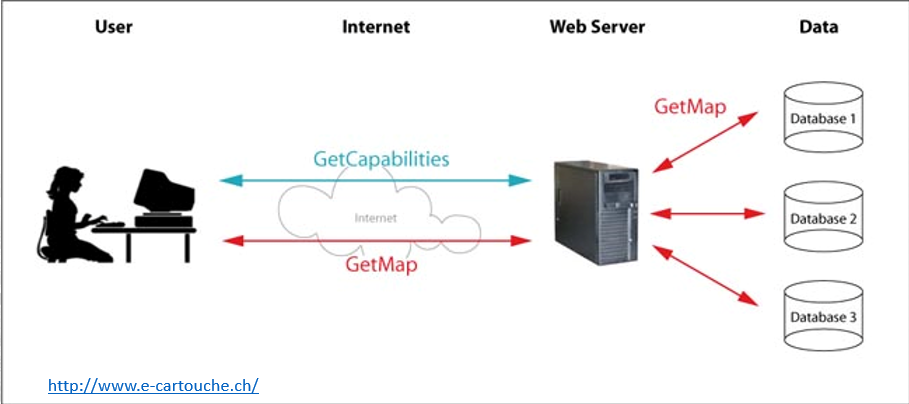
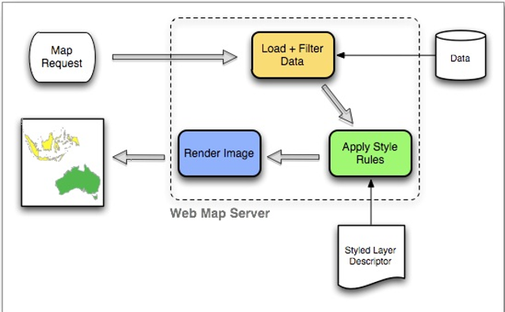
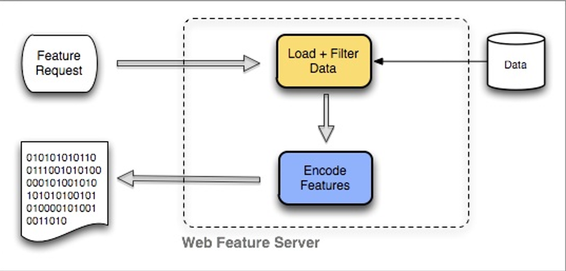
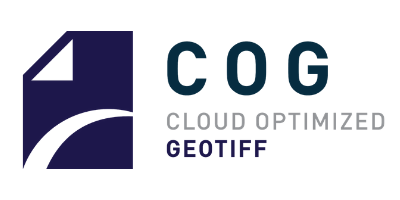
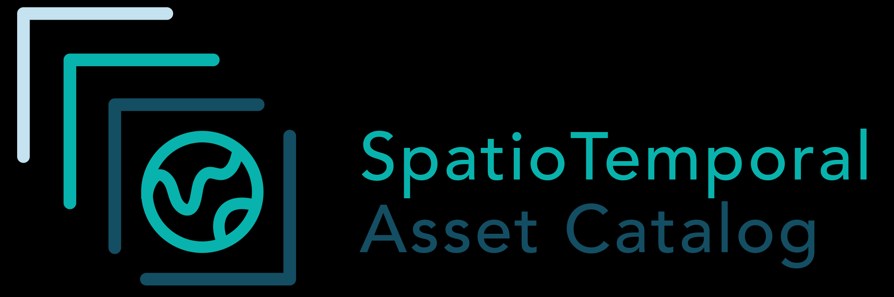
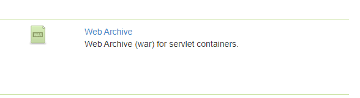
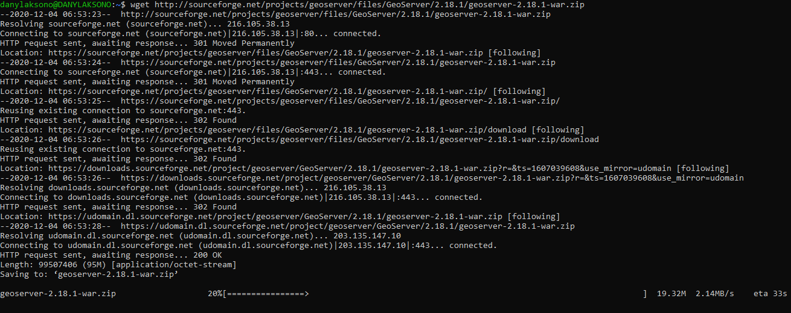
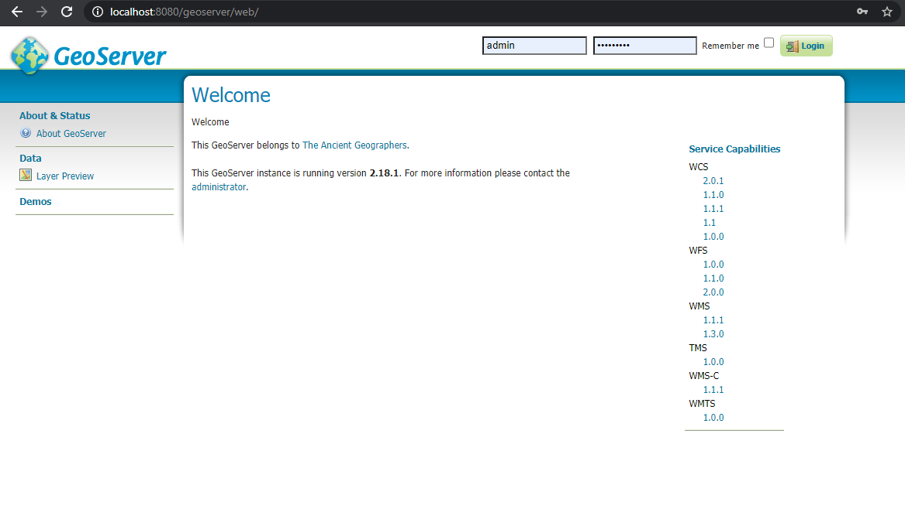
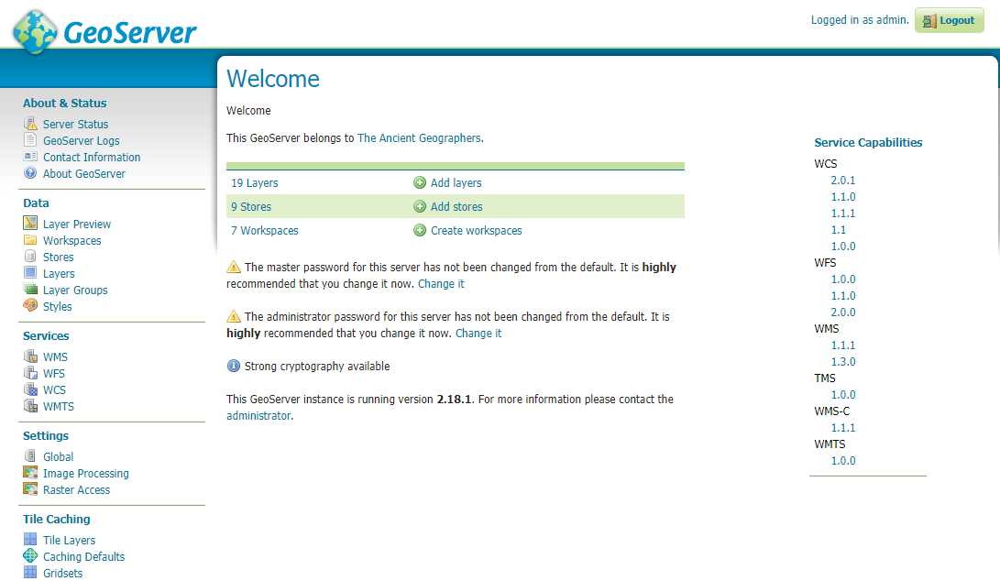

Interoperabilitas dan Standar OGC¶
Kebutuhan untuk berbagi pakai data spasial semakin meningkat seiring dengan berkembangnya kebutuhan akan data dan informasi geospasial itu sendiri. Dengan beragamnya format data dan vendor aplikasi yang digunakan di berbagai instansi, perlu adanya suatu standar yang dapat digunakan untuk menjamin agar data spasial yang dibagikan antar instansi dapat digunakan secara optimal. Pada bagian ini akan dibahas mengenai standar pertukaran data spasial untuk menjamin interoperabilitas data spasial
Kebijakan Satu Peta dan Interoperabilitas Data Spasial¶
Wacana mengenai kebijakan satu peta telah dimulai sejak tahun 2010 di Indonesia. Meskipun Indonesia merupakan salah satu negara early-adopters untuk inrastruktur data spasial, baru pada tahun 2011 melalui Undang-Undang Informasi Geospasial (UUIG) wujud Infrastruktur Data Spasial yang digunakan untuk berbagi pakai data antar instansi ini mulai terlihat.
Interoperabilitas Data Spasial¶
Berbagai instansi di Indonesia menggunakan data spasial pada berbagai level. Sebagai produser atau pemilik data spasial pada domain masing-masing, tiap instansi menggunakan format data dan perangkat lunak yang berbeda. Hal ini berakibat pada sulitnya berbagi pakai data antar instansi. Terlebih lagi, data spasial memiliki karakteristik yang berbeda dibandingkan dengan data biasa, seperti adanya sistem proyeksi, geometri, topologi yang mendefinisikan data tersebut. Pertukaran data pada berbagai vendor yang berbeda dengan format data masing-masing berpotensi mengakibatkan loss of information, dan dalam kasus data spasial, dapat menyebabkan pengambilan keputusan yang salah.
Fair Principle (Findable, Accessible, Interoperable dan Reuseable) digunakan untuk menjamin agar data spasial dapat digunakan oleh berbagai aktor yang berbeda. Prinsip FAIR memungkinan format data dari berbagai instansi yang berbeda untuk dapat digunakan tanpa hilangnya informasi penting terkait data tersebut. Pada data spasial, implementasi FAIR principle merupakan kebutuhan utama pada Infrastruktur Data Spasial, dimana data geospasial antar wali data yang berbeda dapat saling digunakan satu dengan yang lain.
Fig. 27 Prinsip FAIR¶
Standar OGC¶
Standar OGC dikembangkan oleh para anggota untuk membuat informasi dan layanan geospasial memenuhi prinsip FAIR - Findable, Accessible, Interoperable, dan Reuseable. Standar digunakan oleh pengembang perangkat lunak untuk membangun antarmuka terbuka dan pengkodean ke dalam produk dan layanan masing-masing vendor. Standar adalah “produk” utama OGC dan telah dikembangkan oleh member OGC untuk mengatasi tantangan interoperabilitas tertentu, seperti menerbitkan konten peta di Web, bertukar data lokasi penting selama tanggap bencana & pemulihan, dan memungkinkan penggabungan informasi dari beragam konten Internet of Things (IoT).
OGC untuk interoperabilitas¶
OGC mengikuti Spesifikasi OpenGIS yang mendefinisikan bagaimana data spasial disimpan dan direpresentasikan. Standar Simple Feature Spesification ini menjadi acuan bagi OGC dan berbagai perangkat lunak yang mendefinisikan data spasial sehingga memungkinkan satu interpretasi yang sama pada fitur yang direpresentasikan oleh data spasial yang dimaksud. Simple Feature didefinisikan sebagai berikut:
{kind=link}
Berbagai standar OGC dibuat untuk memungkinkan data-data spasial yang beragam dari berbagai domain untuk dapat digunakan mengikuti prinsip FAIR sesuai dengan format yang juga didefinisikan oleh OGC. Dengan tujuan untuk memungkinkan data spasial dapat disajikan melalui internet, standar ini juga menjamin prinsip FAIR melalui penggunaan metadata dan data dalam bentuk layanan (services). Layanan inilah yang digunakan untuk meng-onlinekan data spasial agar dapat digunakan oleh aktor yang berbeda agar dapat menggunakan data spasial dengan semua karakteristiknya.
{kind=link}
Terdapat puluhan standar OGC berbeda yang digunakan untuk berbagai keperluan. Standar untuk layanan dan format data diatur tersendiri. Demikian pula standar untuk memungkinkan Discovery atau pencarian data spasial pada portal untuk menjamin prinsip Findable dan Accessible. Berikut adalah standar terkait dengan Discovery, Container, serta layanan dan API.
{kind=link}
Berikut standar OGC untuk Model data dan Sensor:
{kind=link}
Tiap standar tersebut memiliki fungsi dan fitur yang berbeda. Pada bagian selanjutnya akan dibahas mengenai WMS, WFS dan WCS yang merupakan standar yang umum dijumpai saat ini.
WMS WFS dan WCS¶
Dari ratusan standar yang berbeda, beberapa standar digunakan lebih sering dibandingkan yang lain karena kebutuhan untuk representasi data menggunakan standar ini cukup besar. WMS digunakan untuk pertukaran data vektor dan raster, WFS untuk data vektor dan WCS untuk data raster. Ketiga standar ini memiliki spesifikasi yang berbeda untuk digunakan pada kebutuhan yang berbeda pula.
Web Map Service (WMS) WMS merupakan standar yang dibuat untuk memungkinkan akses data spasial baik dalam format raster maupun vektor untuk disajikan sebagai Image. Pada data masukan berupa raster, WMS mengkonversi nilai pixel dan format data masukan menjadi format data yang lebih ringkas untuk digunakan melalui web (misalnya png atau jpg) sehingga nilai pixel aslinya hilang.

Untuk data vector, WMS mengkonversi data tersebut menjadi raster untuk keperluan tampilan, dimana simbologi pada layer tampilan tersebut diperoleh berdasarkan styling yang dilakukan di sisi server.

Web Feature Service (WFS) WFS digunakan untuk menyajikan data vector lengkap dengan semua propertinya (atribut, geometri, sistem proyeksi, dst). WFS digunakan apabila client menginginkan untuk mendapatkan data vector secara penuh, misalnya untuk keperluan analisis spasial. Berbeda dengan WMS yang melakukan styling pada sisi server, WFS menyajikan data biner dalam bentuk vector kepada client, sehingga kebutuhan untuk melakukan simbologi diserahkan pada pengaturan client

Web Coverage Service (WCS) WCS berbeda dengan WMS dalam hal penyajian informasi detil dari sebuah citra. Jika WMS menyederhanakan nilai pixel pada raster menjadi nilai RGB sesuai dengan tampilannya, maka WCS menjaga nilai pixel dan band dari raster masukan sehingga client dapat menggunakan data tersebut untuk analisis raster. Contoh penggunaan WCS adalah untuk menampilkan raster elevasi yang memungkinkan pengguna untuk melakukan analisis seperti slope atau aspect.
Berikut adalah contoh skenario penggunaan ketiga jenis layanan tersebut:
Sebagai contoh, dibuat sebuah WebGIS Desa yang memanfaatkan data dari berbagai sumber sebagai berikut:
WMS Citra SPOT 6 desa dari Badan Informasi Geospasial sebagai latar belakang
WMS Batas Desa dari BPS sebagai latar belakang
WFS Jaringan Jalan dari PU untuk analisis buffer
WFS bangunan desa dari server local untuk simbologi atribut
WCS raster ketinggian (elevasi) DEMNAS dari BIG
WCS raster cuaca terkini dari BIG
Dengan menggunakan layanan OGC, data dari berbagai sumber dapat digabungkan pada satu platform yang sama, sekaligus memungkinkan analisis dan visualisasi dari data yang berbeda. Ini merupakan implementasi interoperabilitas pada Prinsip FAIR.
Moving Forward¶
Standar OGC mengatur pertukaran data spasial pada domain utama, khususnya terkait dengan berbagai format data baik raster maupun vektor. Seiring perkembangan teknologi, khususnya trend pengolahan data berbasis cloud dan Analysis Ready Data maupun perkembangan teknologi internet itu sendiri, terdapat beberapa standar lain yang saat ini berkembang untuk memungkinkan beragam aplikasi di luar standar yang disediakan oleh OGC saat ini. Beberapa diantaranya adalah seperti berikut:
Cloud Optimised GeoTIFF (COG)¶

Cloud Optimized GeoTIFF (COG) mirip dengan file GeoTIFF biasa tetapi dengan organisasi internal yang memungkinkan akses baca yang lebih efisien ke sebagian gambar, alur kerja yang paling umum untuk mengakses citra yang disimpan di infrastruktur cloud. Hal ini dilakukan dengan memanfaatkan kemampuan klien yang mengeluarkan permintaan rentang HTTP GET untuk meminta hanya bagian dari file yang mereka butuhkan. Teknologi yang sangat mirip yang memungkinkan Anda untuk langsung mulai menonton video streaming memungkinkan analisis pada GeoTIFF besar tanpa perlu mengunduh seluruh file. Sementara beberapa standar berbeda telah mengatasi masalah ini, COG berada pada posisi yang baik untuk menjadi standar komunitas dan industri. Dukungan untuk standar baru dengan cepat diintegrasikan ke dalam pustaka perangkat lunak sumber terbuka dan mempertahankan kompatibilitas ke belakang; sistem yang dapat melihat file TIFF biasa juga dapat melihat COG, meskipun sistem tersebut tidak memanfaatkan pembacaan rentang byte HTTP atau komponen geospasial. COG adalah GeoTIFFS adalah TIFF. Dalam waktu singkat sejak dikembangkan, format COG dengan cepat diadopsi oleh penyedia citra observasi Bumi karena ini merupakan cara untuk dengan mudah mengurangi biaya transfer jaringan dalam infrastruktur terdistribusi.
Spatio Temporal Asset Catalog (STAC)¶

Spesifikasi SpatioTemporal Asset Catalog (STAC) bertujuan untuk menstandarkan bagaimana data geospasial diekspos secara online dan diquery. ‘Aset spasiotemporal’ adalah file apa pun yang mewakili informasi tentang bumi yang ditangkap dalam ruang dan waktu tertentu. Fokus awal utamanya adalah citra penginderaan jarak jauh (dari satelit, tetapi juga pesawat, drone, balon, dll.), tetapi intinya dirancang agar dapat diperluas ke SAR, FMV, Point-cloud, hiperspektral, LiDAR, dan data turunan seperti NDVI , Model Elevasi Digital, mozaik, dll.
Tujuan STAC adalah agar semua penyedia utama citra dan data observasi bumi lainnya mengekspos data mereka sebagai Katalog Aset SpatioTemporal, sehingga kode baru tidak perlu ditulis setiap kali REST API berbasis JSON baru keluar yang membuat datanya tersedia di dengan cara yang sedikit berbeda. Ini akan mengaktifkan komponen pustaka standar dalam banyak bahasa. STAC juga dapat diimplementasikan dengan cara yang sepenuhnya ‘statis’, memungkinkan penerbit data mengekspos data mereka hanya dengan menerbitkan file JSON yang ditautkan secara online.
Kedua standar tersebut mendukung penggunaan citra dan analisis citra pada cloud, tanpa perlu mengunduh satupun data pada komputer lokal. Rilis terbaru Landsat Collection 2 telah menggunakan standar COG dan STAC, dan menunjukkan arah penggunaan format data yang lebih terbuka untuk mendukung interoperabilitas data spasial.
{kind=link}
Standar Baru untuk Dunia Baru: OGC-API¶
Standar seperti WMS, WFS dan WCS dibuat berdasarkan standar dan teknologi internet yang berlaku pada awal tahun 2000an. Dengan perkembangan teknologi saat ini serta perubahan paradigma data spasial pada web, OGC mengusulkan serangkaian standar baru untuk menggantikan standar WMS, WFS, dst yang digunakan saat ini.
Berikut adalah beberapa standar OGC-API yang sedang diusulkan:
OGC API - Common (OWS Common)
OGC API - Features (former WFS)
OGC API - Coverages (former WCS)
OGC API - Maps (former WMS)
OGC API - Tiles (former WMTS)
OGC API - Processing (former WPS)
OGC API - Records (former CSW)
OGC-API saat ini sedang dalam tahap pengembangan aktif, dan prosedur migrasi dari standar lama (WMS, WFS, WCS, dst) sedang disiapkan. Beberapa aplikasi, seperti PyGeoAPI dikembangkan untuk keperluan ini. PyGeoAPI merupakan salah satu prototip aplikasi yang dikembangkan untuk mendukung Standar OGC API yang baru. Saat ini, PyGeoAPI telah diujicobakan dan berhasil digunakan untuk mendukung infrastruktur data spasial di beberapa negara.
{kind=link}
Server Data Spasial: Geoserver¶
Geoserver merupakan aplikasi Server Data Spasial yang mendukung publikasi berbagai macam jenis data spasial menjadi format yang didukung oleh OGC. Geoserver seringkali digunakan bersamaan dengan aplikasi lain sebagai bagian dari sebuah sistem informasi spasial, web GIS atau infrastruktur data spasial untuk memastikan data spasial dapat digunakan pada berbagai sistem yang berbeda dan menjamin interoperabilitas.
Latihan: Instalasi Geoserver¶
Pada bagian ini akan dibahas mengenai cara instalasi Geoserver: melalui aplikasi servlet seperti Tomcat, serta menggunakan paket aplikasi yang tersedia pada Docker.
Cara 1: menggunakan Docker Pada bagian ini, akan digunakan Docker sebagai media instalasi Geoserver. Sebelumnya telah dibahas bagaimana Docker dapat mempermudah instalasi berbagai aplikasi. Berikut adalah panduannya:
Dengan cara pertama ini, dapat digunakan berbagai Image Geoserver yang tersedia pada Docker Hub. Untuk latihan ini akan digunakan image yang dibuat oleh Kartoza, sama seperti PostGIS pada materi sebelumnya.
Jalankan perintah berikut untuk menginstall Geoserver pada port 8080 menggunakan Docker:
docker run -d -p 8080:8080 --name geoserver kartoza/geoserver:latestMaka Geoserver akan diunduh dan dijalankan pada Localhost:8080.
Cara ini akan mengunduh Geoserver berikut seluruh kelengkapannya (extensi standar maupun community, dokumentasi dan sampel data), sehingga ukuran unduhan akan cukup besar. Untuk instalasi Geoserver dengan ukuran yang lebih kecil untuk keperluan latihan ini, gunakan Cara Kedua di bawah ini.
Cara 2: Melalui Tomcat Pada latihan ini, akan dibuat instalasi baru Geoserver dengan menggunakan Tomcat yang telah diinstall pada latihan berikutnya, sehingga terlebih dahulu perlu dipastikan bahwa instalasi Tomcat telah berhasil dan Tomcat berhasil dijalankan.
Unduh Geoserver dari website resminya: http://geoserver.org/release/stable/ Untuk latihan ini, yang diunduh adalah build Geoserver dengan format Web Archive (WAR). Karena unduhan akan dilakukan pada mesin WSL, maka cukup copykan link yang mengarah pada Web Archive tersebut:

dalam hal ini, linknya adalah:
http://sourceforge.net/projects/geoserver/files/GeoServer/2.18.1/geoserver-2.18.1-war.zip
Buka WSL, kemudian pada folder dimana kita memiliki akses untuk menulis, jalankan perintah berikut
wget http://sourceforge.net/projects/geoserver/files/GeoServer/2.18.1/geoserver-2.18.1-war.zip

perintah tersebut akan mengunduh file zip dengan nama:
geoserver-2.18.1-war.zip(sesuaikan nama berkas jika menggunakan versi yang berbeda)Lakukan ekstraksi file zip hasil unduhan pada folder aktif Tomcat. Pada Ubuntu, Tomcat menggunakan folder
/opt/tomcat/latest/webapps(sebagaimana pengaturan softlink yang telah dibuat pada saat instalasi) untuk mempublikasikan aplikasi WAR. Gunakan perintah berikut untuk mengextract zip ke dalam folder tersebut:Install
unzipterlebih dahulu:sudo apt install unzip, kemudian:sudo unzip -o geoserver-2.18.1-war.zip -d "/opt/tomcat/latest/webapps/"Jika belum, aktifkan Tomcat menggunakan perintah:
sudo systemctl start tomcat
Tunggu sampai beberapa saat pada saat Tomcat melakukan ekstraksi file WAR tersebut.
Buka browser pada Windows di alamat:
localhost:8080/geoserver
Cara yang sama dapat digunakan untuk aplikasi berbasis Java Web Archive lain, seperti Mapstore atau Geonetwork. Instalasi melalui WAR ini akan memberikan kita kontrol penuh pada aplikasi, seperti pengaturan SSL, CORS, dan lain sebagainya. Demikian pula, deployment pada Tomcat memungkinkan beberapa aplikasi sekaligus untuk dapat diinstall pada port yang sama (Port 8080), sehingga cara inilah yang akan digunakan dalam latihan ini.
Selanjutnya, Geoserver siap digunakan untuk mengunggah data. Berikut adalah antarmuka Geoserver dengan menggunakan username: admin dan password geoserver.

Pada bagian kanan adalah daftar layanan yang didukung oleh Geoserver. Semua data yang diunggah pada Geoserver akan menggunakan layanan tersebut agar dapat diakses dari berbagai client, seperti QGIS. Inilah pembahasan kita berikutnya: bagaimana melakukan publikasi data agar dapat diakses secara interoperable oleh client?